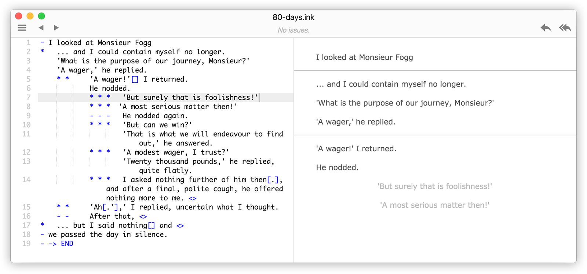

Достаточно давно существует готовый инструмент для написания квестовых игр. Он состоит как бы из двух частей - сам язык, который называется ink, и простейший плеер для проигрывания ink-скриптов, который называется inky.
Скачать inky с поддержкой ink можно на официальном сайте:
https://www.inklestudios.com/ink/
Интрефейс inky выглядит примерно так:

Для языка ink существуют готовые библиотеки, которые подключаются к игровым движкам (например, к Godot), и позволяют проигрывать написанные на ink истории внутри игрового движка. Происходит это так: внутри движка создается специальный объект-плеер ink-файлов. И у этого объекта-плеера имеются базовые методы, которые запускают его проигрывание, и останавливают проигрывание когда пользователь должен сделать выбор (событийная модель). В обработчике события выбора можно получить индекс и текст того действия, который выбрал пользователь. И все это можно показывать в том интерфейсе игрового движка, который создает разработчик игры.
Примечание: иногда для плеера нужен не сам ink-файл, а его преобразованное представление в виде *.json-файла. Все зависит от конкретной реализации.
То есть, саму историю можно написать и отладить внутри inky, а потом можно использовать эту историю уже в самой игре, написанной с использованием какого-нибудь игрового движка.
Имеется двухчасовое видео с конференции GodotCon 2025, в котором объясняется как это делать.